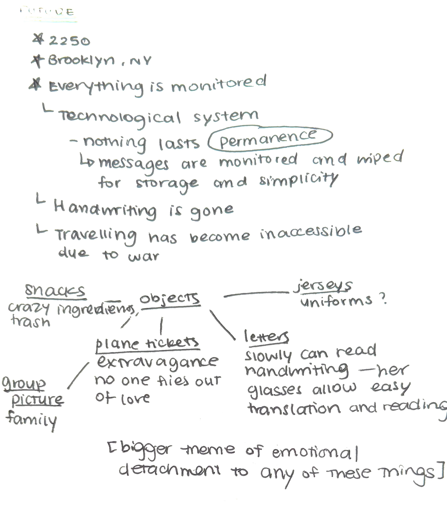

For this part of the project, I really wanted to start with the point of a normal 23-year old person as myself, just 224 years in the future.
At first, all I could think about what a future could be was the future described in The Giver, but I wanted to continue building on the
world and society we have now. One thing about our expanding technology is not just the advancements, but the sudden access
we have to absolutely everything, and how little privacy and control we sometimes have now, making us comfortable behind a screen constantly.
WFH, online dating, knowing what someone's cousin's husband is up to through a single search, etc. I feel like there is more and more of a disconnect
between individuals, and we are losing the ability to form intimate connections with the people around us.

I chose my subject to be some sort of archaeologist looking through this box, and although I originally thought trying to capture
what her experience and reactions would be like going through each thing, I decided to go with the idea that this girl's job is to analyze and interpret the objects, and she is trying to piece together what the person who owned this box was like.
Rather than building on a specific fictional world, I wanted to focus on the emotionally detached state of things that now mean a lot to me,
even now, handwritten letters are dying, or so many snacks slowly start transforming into this crazy health obsession.
Through small commentary of our world currently, I took what I currently feel the world is moving towards and used it as the setting of my work;
I made a museum website, taking the Met and MoMA as inspirations, to showacase each object in the box, and playfully "interpret" what meaning they have,
purposefully making them erroneous and reflecting said themes.
I also ended up adding a layer to the outside of box just because I felt like the white exterior was too plain and not personal, and I wanted to
use an excuse to arts and crafts and make an embossed aluminium shell. I still kept the tie.